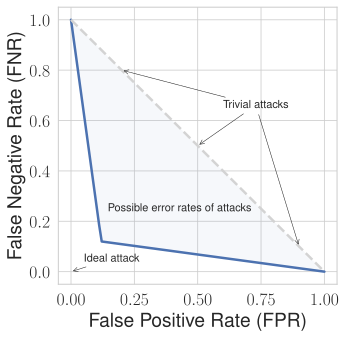
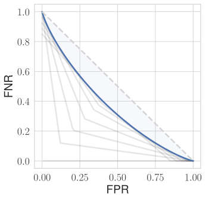
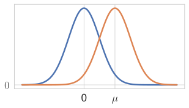
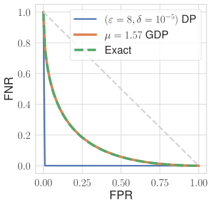

Guest post: Goodbye (ε,δ), hello μ! Reporting privacy guarantees in machine learning
This blog post is written by Bogdan Kulynych; I helped with editing and am excited to host it here as a guest post. If you’d also like to contribute a post about your research to this blog, don’t hesitate to get in touch!
A Gaussian mechanism with \(\varepsilon=6\) can be less private than one with \(\varepsilon=8\). How could this be? This fact points to a problem with how we currently report privacy guarantees in privacy-preserving machine learning. In this blog post, we explain the issue, and propose one possible way of fixing it.
The problem with \(\varepsilon\)
The standard way of reporting differential privacy guarantees is to use the pair of parameters \((\varepsilon,\delta)\) for a small \(\delta\). The community has developed some intuitions and informal conventions, e.g., \(\varepsilon<10\) is generally considered OK in machine learning applications. But this convention has a big issue.
Often, we want to analyze the privacy risk of the mechanism in terms of standard attacks such as membership inference. This is useful, both to communicate the privacy guarantees to stakeholders and to audit the privacy guarantees. But only knowing a single pair \((\varepsilon,\delta)\) is not enough to characterize the success of such attacks.
Let us illustrate why that is, using optimal membership inference attacks. To quantify the attack success, we draw the trade-off curve between the False Positive Rate (FPR) — how often the attacker incorrectly guesses that their target is in the data — and the False Negative Rate (FNR) — how often the attacker incorrectly guesses that their target is not in the data — of the best possible attack. By doing this with an optimal attack, we know that the FPR and FNR of any other attack must be higher: the trade-off curve is a lower bound on error rates of all possible membership inference attacks.
As an example, consider a Gaussian mechanism that is \((\varepsilon,\delta)\)-DP with \(\varepsilon=2\) and \(\delta=10^{-5}\). If we pretend that these parameters are the only thing we know about the mechanism (and ignore the fact that it’s a Gaussian mechanism), we get the following trade-off curve:

This guarantee seems quite weak: the attacker can achieve a True Positive Rate (TPR) close to 90% (i.e., FNR of around 10%) at FPR of about 10%, which is a fairly strong attack! Differentially private mechanisms, however, satisfy an infinite set of \((\varepsilon,\delta)\)-DP guarantees. As all of them are simultaneously valid, we get a much more precise version by combining the trade-off curves (shown in blue next) from all the \((\varepsilon,\delta)\)-DP pairs (shown for several pairs as solid grey lines):

This is the “real” trade-off curve of our Gaussian mechanism1. We can compute it almost exactly for many practical algorithms, including DP-SGD2. As we can see, the mechanism turns out to be much more private than what we would assume if we only knew that it satisfies \(\varepsilon=2\) at \(\delta=10^{-5}\). Note that both plots show the same mechanism with the same parameters, only different analyses of it.
In other words, reporting the privacy guarantees with just \(\varepsilon\) and \(\delta\) loses a lot of information: the standard practice makes us underestimate the protection we get from DP. It also complicates mechanism comparisons: if we compare two guarantees using their \(\varepsilon\) when the \(\delta\) values differ, we might get the wrong idea of which one is more private. For instance, a Gaussian mechanism that satisfies \(\varepsilon=6\) at \(\delta=10^{-5}\) is less private than a Gaussian mechanism that satisfies \(\varepsilon=8\) at \(\delta=10^{-9}\).
Gaussian DP to the rescue
It seems that we have to pick one of two poisons. Either we report a single, compact, \((\varepsilon,\delta)\) pair while sacrificing the ability to characterize the privacy risk and compare mechanism precisely… or we report the entire trade-off curve, e.g., using a big table of FNR and FPR values, which is difficult to understand and communicate. Can we do better?
It turns out that for many mechanisms in machine learning, we can avoid this dilemma by using Gaussian differential privacy. This is the main recommendation we make in our recent position paper at IEEE SatML 2026 conference, Gaussian DP for Reporting Differential Privacy Guarantees in Machine Learning.
Gaussian differential privacy (GDP) is a variant of differential privacy that is specifically tailored to the Gaussian mechanism, and can characterize its trade-off curve above exactly using just a single number \(\mu\). This \(\mu\) has a nice interpretation: if a mechanism satisfies \(\mu\)-GDP, then membership inference attacks are at least as hard as distinguishing two unit-variance Gaussians that are \(\mu\) units apart, e.g., \(\mathcal{N}(0,1)\) and \(\mathcal{N}(\mu,1)\), based on a single observation:

How well does this work
As it turns out, the privacy guarantees of most algorithms in privacy-preserving machine learning can be very precisely characterized with GDP. This is because many such algorithms, like the standard DP-SGD, consist of compositions of simpler mechanisms, and these tend to work well with GDP3.
For a concrete illustration, here are three trade-off curves of a DP-SGD instance: one that we obtain via exact computation, one obtained via Gaussian DP, and one that corresponds to a single \((\varepsilon,\delta)\) pair:

As we can see, GDP fits this instance of DP-SGD very well, whereas the \((\varepsilon, \delta)\) guarantee is extremely lossy. This works similarly in many real-world instantiations.
For some specific algorithms, however, GDP might not fit the exact trade-off curve as well. Luckily, we can always evaluate how accurately a representation (e.g., a specific \(\mu\)) matches the optimal trade-off curve, using a metric called regret4. When regret is smaller than 1%, for most practical purposes, we might just ignore the imprecision. For instance, the regret of using GDP to describe the exact trade-off curve of the mechanism in the plot just above is 0.1%, whereas the regret of using a single pair \((\varepsilon=8,\delta=10^{-5})\) is 21%.
We provide a new Python package gdpnum as part of the Interpretable DP suite of tools that enables researchers and practitioners to obtain a GDP guarantee and estimate its regret. Fun fact: in some cases, GDP characterizes the privacy guarantees of DP-SGD more precisely (with lower regret) than \(\varepsilon\)-DP characterizes the guarantees of the Laplace mechanism!
As a caveat, there is a great variety of algorithms used in privacy-preserving machine learning and statistics. Although GDP is going to be a good choice for DP-SGD, algorithms based on the Gaussian mechanism, or other algorithms that consist of many compositions of simpler building blocks, it is not always the best choice. Some algorithms, such as the Randomized Response, cannot be precisely represented by GDP. Others, such as Report-Noisy-Max — a key component in a family of algorithms called PATE — currently lack known general characterizations in terms of trade-off-curves.
Takeaways
In our position paper, we encourage the researchers and practitioners to report a compact guarantee when it is precise, i.e., when its regret is low, and we show that, for many instances in privacy-preserving machine learning, GDP provides a very precise and compact guarantee. Reporting it solves the disadvantages of the standard convention of reporting a single \((\varepsilon,\delta)\) pair: we can correctly compare different algorithms by their \(\mu\) value, and we can easily map this value to the entire trade-off curve, which enables us to precisely characterize the privacy risks in terms of attack success rates.
-
This trade-off curve is exactly what the notion of \(f\)-DP captures. ↩
-
See Attack-Aware Noise Calibration for Differential Privacy for the algorithm and our riskcal Python package for practical implementations. ↩
-
This phenomenon is related to, but different from, a well-known central limit result that states that the privacy guarantees of a sufficiently large number of compositions of any mechanism converge to those of a Gaussian mechanism. In contrast to this asymptotic analysis, in the position paper and this blog post we only talk about correct, non-asymptotic, GDP guarantees. ↩
-
See Beyond the Calibration Point: Mechanism Comparison in Differential Privacy for more details. ↩